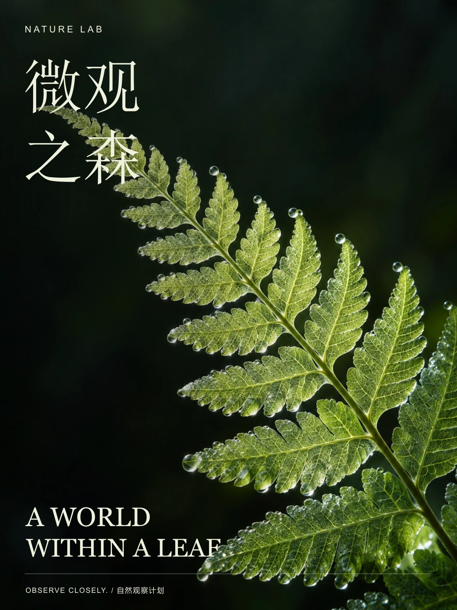
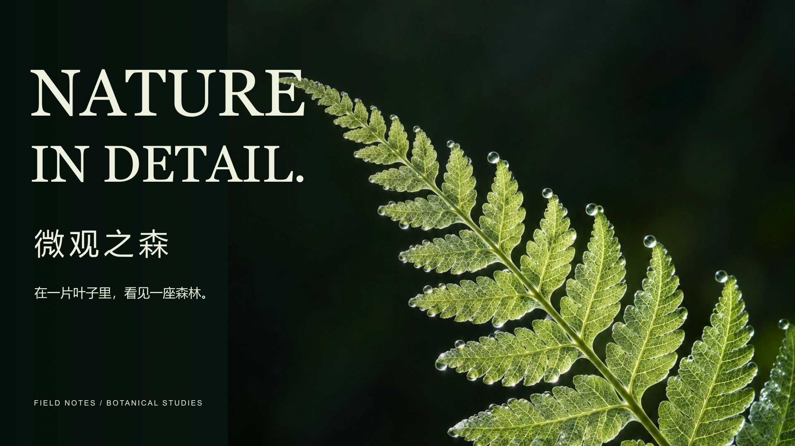
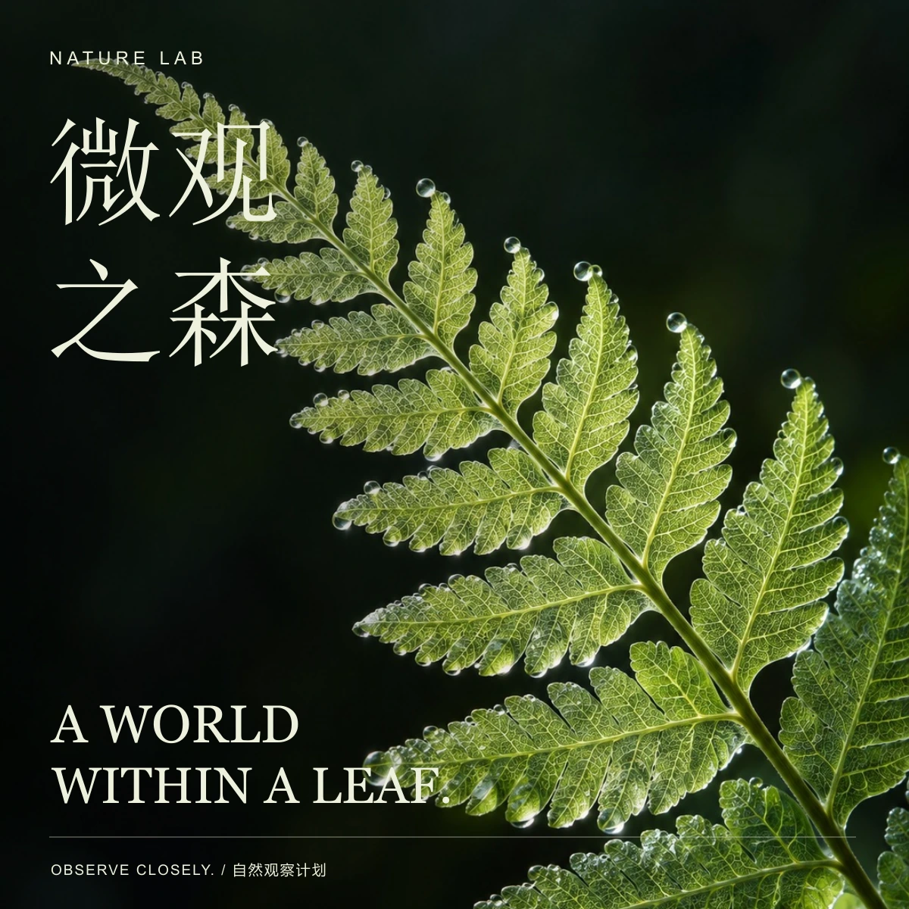

03 / 自然教育视觉
CONCEPT PROJECT / 2026
微观之森
A world within a leaf.
在一片叶子里，看见一座森林。

项目概念
自然观察课程的视觉概念。从叶脉、透光和露珠切入，把观察的起点缩小到一片蕨叶。
植物微距与细密的标注节奏，营造自然博物图鉴般的阅读感。轻盈的衬线标题与深色背景，让细节成为视觉中心。
横向表达
LANDSCAPE COMPOSITION / 16:9



03 / 自然教育视觉
CONCEPT PROJECT / 2026
A world within a leaf.
在一片叶子里，看见一座森林。

自然观察课程的视觉概念。从叶脉、透光和露珠切入，把观察的起点缩小到一片蕨叶。
植物微距与细密的标注节奏，营造自然博物图鉴般的阅读感。轻盈的衬线标题与深色背景，让细节成为视觉中心。
LANDSCAPE COMPOSITION / 16:9

